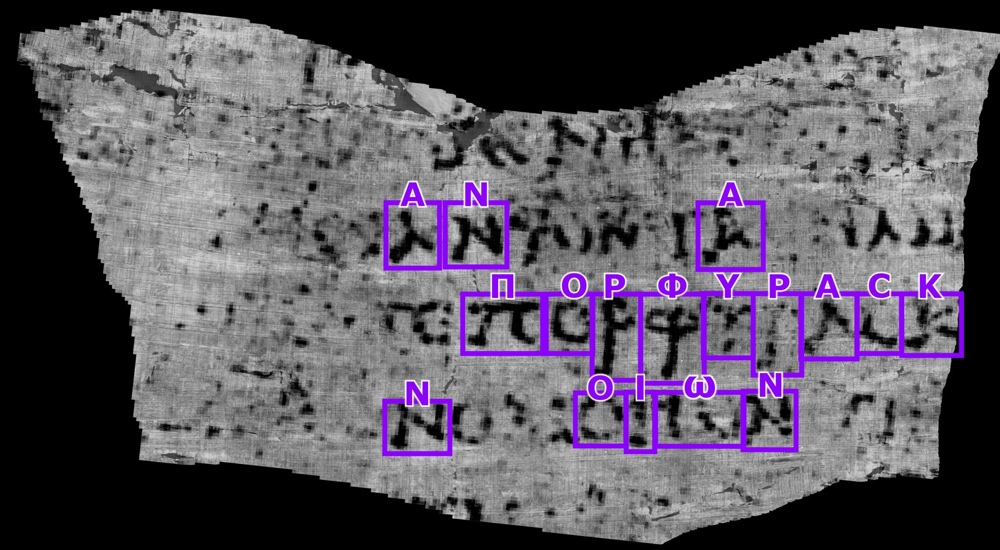

헤르쿨라네움의
숯덩이 책
- 베수비오 화산이 별장 도서관을 통째로 묻다초고온 화쇄류가 산소 없이 순식간에 탄화시킴
- 새까만 숯덩이로 굳은 파피루스 두루마리고대에서 통째로 살아남은 유일한 도서관
- 펴려고 하면 그대로 바스러진다물리적으로 펼치는 시도마다 원문이 소실
펴지 않고 읽는 법 — 빛에서 글자까지
탄화된 두루마리는 펼치는 순간 가루가 된다. 손대지 않고 읽어야 한다.
그을음 잉크와 탄화 종이는 밀도가 같다. 일반 X선엔 그림자 차이가 없다.
두루마리를 펼치지 않는다. 가속기의 빛으로 속을 들여다보고, 컴퓨터 안에서 가상으로 펴서, AI로 읽는다.
전자를 광속 가까이 돌리다가 자석으로 진로를 꺾으면, 접선 방향으로 강한 X선이 쏟아진다.
손전등(제멋대로) · 레이저(완전 정렬) · 방사광(그 사이, 밝고 고름)
조금씩 돌려 가며 수천 장을 찍고 거꾸로 계산하면, 자르지 않고도 내부가 입체로 복원된다 — 밀도 지도(복셀).
단면은 나이테처럼 동심원. 한 층의 곡면을 따라가 떠내고(면 추적), 다림질하듯 평평하게 편다.
⚠ 최난관: 눌어붙은 층 분리는 빛이 아니라 컴퓨터가 면을 따라가며 푸는 작업 · 방사광의 위상 정보는 '형태'를 또렷이 할 뿐 글자를 보여 주진 않는다
밝기로는 여전히 안 보인다. 잉크가 남긴 미세한 균열(crackle) 질감을 AI가 패턴으로 학습해 글자를 짚어낸다.
정리: 가속기는 흔적까지 데이터로 남기고, 글자를 읽는 건 AI · AI가 정확히 어떤 신호를 보는지는 아직 열린 질문

Vesuvius Challenge
스캔 데이터를 공개하고 현상금을 걸어, 전 세계 연구자가 두루마리를 읽는 공개 경쟁으로 진행됐다.
방사광 가속기의 빛이 데이터를 만들고, AI가 그 데이터에서 글자를 읽는다.